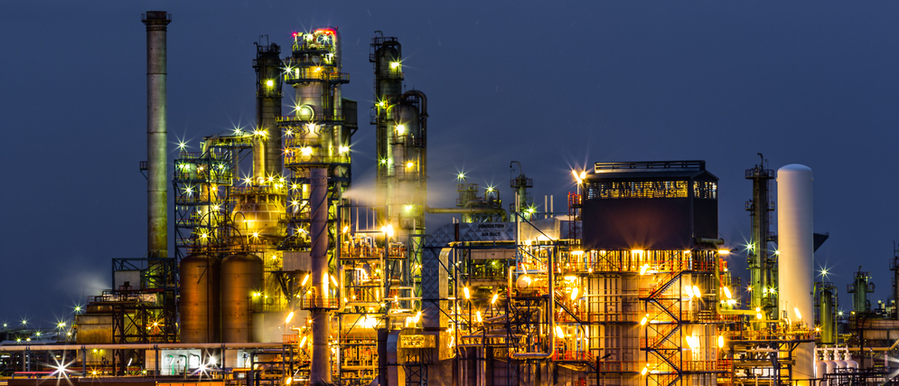

Is there an industry that does not require input material(s) ?
No, there is no industry that does not require input materials. Even the tertiary industry, which is concerned with the framework and foundations of a business and its services, requires some input. It does not have to be physical, but it can be things like people, ideas, patterns and even knowledge.
Is there an industry that can create wealth without meaningful use of energy (work process) ?Â
No, there is no industry that can create wealth without meaningful use of energy. Being industrious means doing meaningful and valuable activities, and that requires energy.
How does supply and demand influence the size of industry segments?
If there is more supply than demand, the price of the product goes down, and the size of the industry goes down. If there is less supply and more demand, the price of the product goes up, making the size of the industry bigger.
Can you describe the input, output and work processes involved in this industry ?
The inputs are players, games, fanbase and equipment needed. The process is playing the game. The output is entertainment
Can you describe the supply and demand of this industry segment
At the moment, there is more supply than demand. Therefor, the prices are cheaper and the industry is smaller. In the future, new games might come out and there will be more demand than supply.
What is the main value supplied by the gaming industry to society?
The main value supplied by the gaming industry is entertainment
Do you feel this industry will keep growing in Australia?
I believe that the industry will stay static for a while here in Australia as there is not enough population here to get more demand for the gaming industry whereas in China, there will be more demand for this industry as there is more people there.
What is the main value supplied by the digital industry to the covid situation?
\Without the digital industry, especially during the covid 19 situation, a lot of businesses would have to close down as there would be no orders coming from customoers. Therefore, the economy of that country would be bad.
During the covid 19 situation, the digital industry has helped people as it offers the ability to communicate with people from home rather than going out to stay in touch with people.
THE END